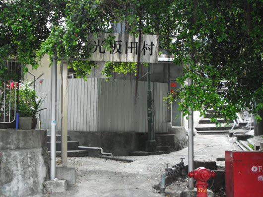
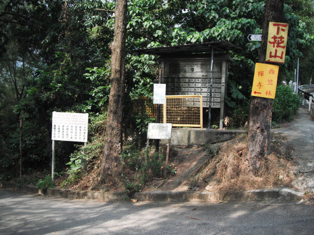

從某一年開始, 我開始每天晨運, 並不知不覺中成為習慣。我的晨運主要是在家附近的山區或海濱隨意走走。很多朋友都喜歡作規律化的晨運, 一定要在指定的地方作同樣及重複的運動, 說這樣才對身體有脾益。但我不喜歡太規律化的生活, 所以每天都按心情和天氣選擇往那裡去。幸好我家附近的晨運資源十分豐富, 無論是幽靜的鄉間小徑、 彎曲陡斜登山小路及優美海濱路線, 都一一俱備, 不愁沒有理想的晨運地方。
我每天晨運都不會攜帶相機, 主要是看慣了沿途的風景, 覺得沒有什麼特別。人就是那麼奇怪, 不會珍惜已經擁有的東西, 總是希望讓更多慾望不斷的霸佔整個心靈。今天就拿起相機, 重新好好的欣賞身邊的風景。
今天天色晴朗, 氣溫又不太寒冷, 就選擇從家旁的一條小徑, 慢慢的走上大帽山中, 沿水澗的山麓走一圈, 需時約三小時。
起點的一段路微微向上傾斜, 十分好走, 路旁還有一些小徑。
小徑山坡上的雛菊, 平時沒多留意, 更不會細心的欣賞, 原來是那麼的可愛。
癡心的雛菊呀!
接著走上數十步的石階, 頗為吃力。走上石階後迎面是一條馬路(荃錦公路)。轉右沿馬路向上走, 不一會便到了光板田村, 是大帽山山腰的一個小村。
不遠處便是光板田村村民福利會。
從設計來看, 光板田村村民福利會以往應該是一間小學。其實我兒時也是在類似這鄉間小學唸書的, 所以每次經過這裡也會流連一會, 懷緬小學的生活, 還彷彿聽到學生的歡笑聲, 亞松、馬仔、黑仔、亞強、威仔、等等兒時的好友….. 好像浮現在面前, 但可惜只是幻覺。
光板田村村民福利會對面馬路旁的巴士站, 很有鄉村風味。
繼續沿馬路旁的行人道向上走, 道路並不太傾斜, 尚算好走。 轉了幾個彎, 便看到不遠處的「豪宅」 – 朗逸峰。
朗逸峰建於大帽山中, 是深山中的一個怪物, 把整個天然環境澈底破壞。荃灣本來有一個由東至西、完美幽雅的連綿山嶺, 可惜給這怪物完全的破壞了, 實是可惜! 政府和發展商真是要好好的反省。
繼續向上走, 荃威花園就在左邊對面的山谷中。
再向上走一會, 整個荃景圍的屋園 – 荃威花園、荃灣中心和荃景花園 – 都盡收眼底。
偶爾經過一些簡陋的村屋, 很多老人家就是住在山中, 自給自足。還每天將耕種扛下山賣給途人。
朗逸峰霸佔整個山峰, 走了很久還在它的範圍內。緊貼朗逸峰是另一怪物 – 寶雲匯。政府和發展商好像嫌朗逸峰對天然環境的破壞性不足, 還在朗逸峰旁發展了寶雲匯。
繼續向上走, 便經過奇園。
在奇園稍作休息, 欣賞花朵。
我兒時居住的鄉村遍佈這些花朵, 我們稱這些花為「炮杖花」或「鞭炮花」。
不知道這花的正式學名, 只知道所有人都稱它為「炮杖花」。其實原因十分簡單, 因為每逄農曆新年前後, 這些花都會準時的盛放, 就好像鞭炮一樣的爆放, 把整個鄉村變得通紅, 熱鬧非常。
在奇園休息完畢, 繼續向上走, 抵朗逸峰的入口。
繼續向上走, 抵曹公潭户外康樂中心, 門外路標用不同的國家語言寫上「歡迎」字句, 表示歡迎世界各地的人士使用。 曹公潭户外康樂中心是一度假中心, 設施有射箭和攀繩等等的户外活動。
繼續向上走, 開始進入山中。
高壓電纜發出的強力磁場, 會否影響附近居民的健康?
繼續向上走, 抵一分叉小路, 差不多走了一半的晨運旅程了。 如果沿荃錦公路繼續向上走會抵達川龍, 另一山中小村。川龍內有一中式傳統茶樓, 並有小販兜售當地種植的菜蔬, 頗有風味。以往經常和太太遠足往川龍, 但很多年都沒有去了, 不知道茶樓是否仍然繼續營業。
2017年三月初再和太太從荃威花園沿大帽山水渠路及荃錦公路遠足往川龍, 茶樓仍然繼續營業, 但以往寧靜的環境, 悠閒地「嘆茶」, 已經變為人山人海、爭奪座位及點心的混亂場面, 破壞了多年來的美好回憶。
接著走下左邊的分叉小路, 不用再沿馬路走, 心情份外開朗。
開始沿大帽山麓走, 景色截然不同, 空氣份外清新。
走下斜坡, 開始沿山麓中溪澗旁的小路走。
小路旁都是青蔥樹木, 十分好走。
沿途流水悠悠, 十分寫意。
經過一個 竹林。
走過竹林, 便抵達下花山 (鵝地), 山中一個小村。
在這深山中, 太陽能是提供電力的最好辦法。
離開下花山, 繼續沿溪澗旁的小路走。我兒時經常和其他小朋友走下溪澗玩, 其實是十分危險的。
這條路徑遊人稍疏。 如果不是經常到此, 真是會有點害怕安全的問題。
雖然道路頗為七寬闊, 但還是小心一點好, 以免樂極生悲。
沿途都有這些「小心失足」警告。
繼續沿溪澗走, 抵下花山西竺林。
沿右邊的小路向上走三分鐘便是西竺林襌院, 一個位於深山中的幽靜佛門聖地, 只有幾位僧人在此修行。
繼續沿溪澗走, 剛才經過的朗逸峰和寶雲匯就在大帽山谷的對面, 原來已經在山谷中拐了一圈。
沿途除了淙淙流水外, 還有很多不同的花朵陪伴, 不愁寂寞。
大帽山谷的樹木郁郁蔥蔥, 風水挺不錯的。
不久抵一涼亭, 差不多是今天晨運的終點站了。

繼續向前走一會, 左邊有一條向下走的小徑。
沿左邊的小徑往下走約十分鐘可抵達荃威花園的平台, 接著從平台搭乘電梯往荃景圍, 沿馬路走便可返回荃灣市區。 其實前面還有兩條主要路徑往荃威花園, 如果還有力氣, 可沿沿溪澗繼續向前走。
我今天精神不錯, 還有點力氣, 選擇沿溪澗繼續向前走。
向前走不到三分鐘, 左邊又是另一條小徑往荃威花園的平台。 其實向下走二分鐘便會和先前的小徑會合的。
繼續向前走, 這一處是我經常來晨運的, 環境十分清優。
剛才在荃錦公路遠眺山谷中的荃威花園, 現在已經在身邊, 原來已經走了這麼多的路了。令我相信, 縱使有這麼遠的路, 只要堅持續步向前走, 總會到達目的地的。
其實荃威花園和這裡的山徑十分接近。
繼續向前走。
從這裡往下望, 筆直的荃灣路就在腳下。
煙霧瀰漫的荃灣。 在這麼晴朗的天氣, 仍然是給那厚厚的煙霧籠罩著, 這是人類繁華的代價, 也是香港政府只顧經濟利益, 而對環境漠視不理的結果。
差不多到達終點了, 回頭看看剛才走的路。
再繼續向前走一會, 左邊又有一條向下的石階路 (元荃古道)。這是往荃威花園及荃景圍的最後一條主要路徑。從這裡往下走。
沿元荃古道一直向下走便可抵達荃景圍。 兩旁樹木林蔭蔽天, 樹影婆娑。
抵荃景圍後, 沿馬路一直向下走便可返回荃灣市區, 結束了這一天的晨運。